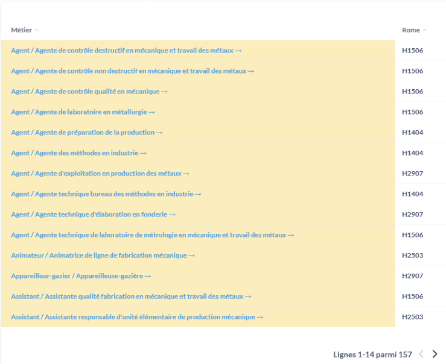

Formation
Remarque : Télécharger⚓
En cliquant sur les ... en haut à droite des encadrés, on peut télécharger les données en différents formats.
- Titre⚓
L'encadré en haut indique le titre de la formation et le niveau de diplôme.
- Domaine de formation associé⚓
Cet encadré indique le domaine de formation associé.
- Métier de la transition écologique⚓
Le cas échéant, cet encadré indique si la formation mène à des métiers de la transition écologique.
- Métiers à l'issue de la formation⚓
Cet encadré indique le nombre de métier vers lesquels la formation peut déboucher.
- Voies de la formation⚓
Cet encadré indique le(s) type(s) de voie(s) disponible(s) pour la formation.
- Taux de devenir favorable - voie scolaire⚓
Cet encadré indique le taux de devenir favorable de la formation par la voie scolaire.
- Taux de devenir favorable - voie en apprentissage⚓
Cet encadré indique le taux de devenir favorable de la formation par apprentissage.
- Liste des métiers⚓
Cette partie de l'écran contient la liste des métiers vers lesquels débouche la formation ainsi que leur code ROME.